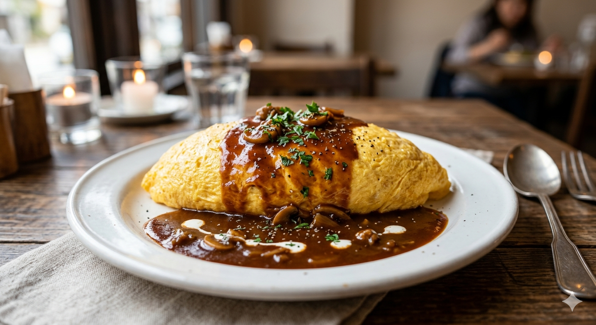
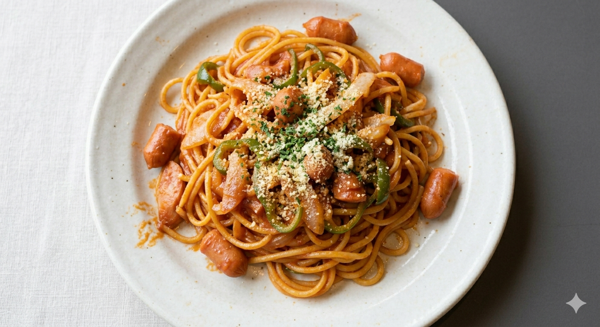
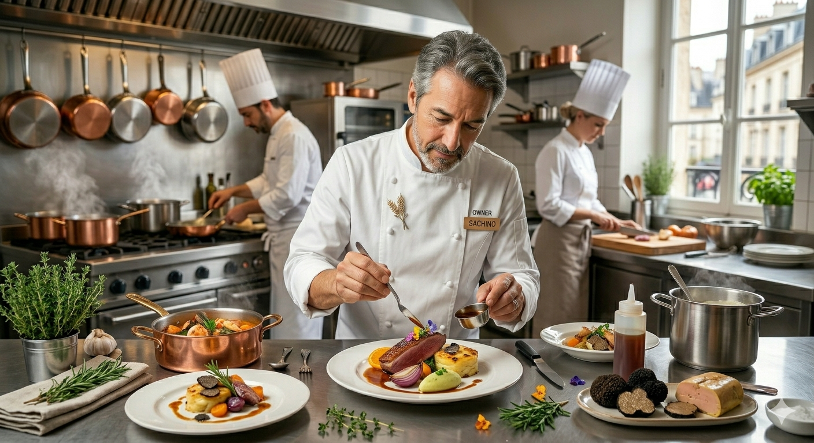

山形・天童。美食の記憶を塗り替える。
三十年の伝統技法を、もっと身近に。
「山形フレンチ シェ・ボン」の魂を継承した、
至福 de デミグラスソース。
三日間かけて牛骨と野菜の旨味を凝縮。フレンチ時代の技法をそのままに、洋食に合う深みを追求しました。
ハンバーグには山形牛を贅沢に使用。溢れ出す肉汁と、力強い肉の旨味をダイレクトに感じていただけます。
厳選した地卵を贅沢に使用。絶妙な火入れが生む「とろふわ」の食感は、職人の勘がなせる業です。

「一口目で違いがわかる。」多くの客様が驚くのは、そのソースの奥行きです。苦味と甘味の黄金比。フレンチ30年のエッセンスがこの一皿に宿っています。

グツグツと焼せられた麺、香ばしく焼られたどっさりのチーズ。中から現れるのはモチモチ食感の極太パスタ。懐かしさと高級感が共存する、当店の隠れた主役です。

店主：小松 秀文
山形・天童で「シェ・ボン」として20年、私は本格フレンチを提供してきました。しかし、コロナ禍を経て気づいたのは、「美味しいものはもっと身近にあるべきだ」というシンプルな真理でした。
子供の頃、デパートの屋上で食べたあのオムライスの記憶。それをフレンチの技法で再現し、誰もが毎日通える価格で提供したい。その想いで、カジュアルな「洋食 すみれ」へと生まれ変わりました。
元フレンチ「シェ・ボン」の技術と情熱を集約。「特別な日にもすみれの料理で祝いたい」という多くの温かい声にお応えし、コース料理を準備いたします。
気軽に過ごせるショートコースから、記念日を彩る贅沢なフルコースまで。
お仕事帰りやカジュアルな晩酌に。テンポよく上質な前菜とスープ、選べるメイン料理を短時間で堪能できるライトなコースです。
誕生日・結婚記念日・大切なご会食に。30年の伝統技法を凝縮した山形牛ステーキと極上デミグラスを愉しむ贅沢な本格フルコース。
※ 詳細な開始時期や事前ご予約受付の開始時期は、店頭およびWebサイトにて順次お知らせいたします。
ご家族や大切な方との心温まるひとときに、ぜひ「すみれ」のコース料理をご利用ください。
洋食 すみれ
〒994-0027 山形県天童市桜町12-8 エトワールK 1F
天童駅より徒歩約5分 / 駐車場完備
「今なら、自家製キッシュ付きのセットが一番人気です。」